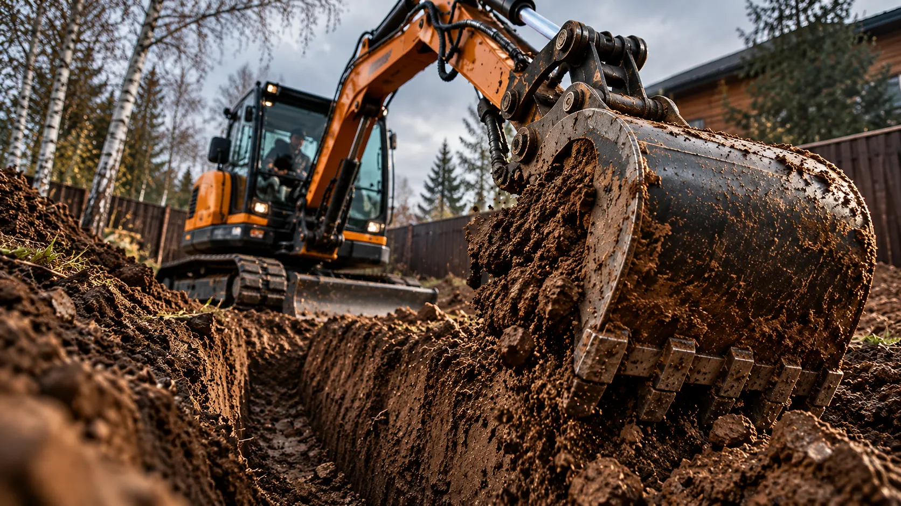

ИСТРА / МИНИ-ТЕХНИКА
Обсудить задачу
Сформируйте короткое техническое описание работ. Форма создаёт текст заявки в браузере. Он не отправляется автоматически — вы сами выбираете, как передать его.

01 / На связиНАЧНЁМ
НАЧНЁМ
С ЗАДАЧИ.
Достаточно выбрать тип работ и назвать населённый пункт. Остальные параметры можно уточнить по телефону.
Позвонить ↗/ Конструктор заявки
ПАРАМЕТРЫ РАБОТ
Форма не отправляет персональные данные на сервер. Она готовит текст, который можно скопировать и передать исполнителю.
Текст заявки готов
Скопируйте текст, отправьте его по SMS или обсудите по телефону. Заявка не была отправлена автоматически.